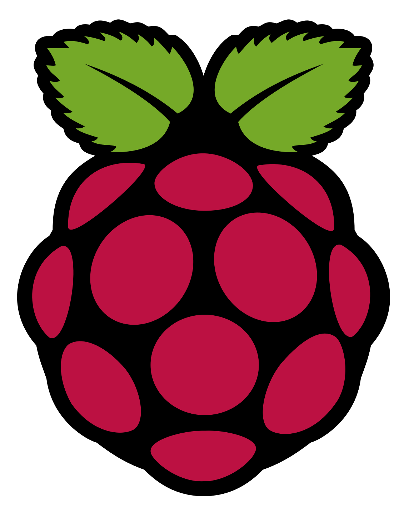
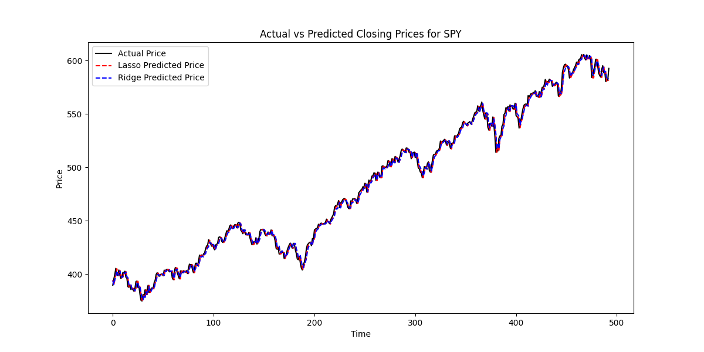

American Sign Language Translation Server
An example of cyber physical computing, I worked on a server that follows https protocol and can render webpages (written in C), that also
communicates with a ML backend (written in Python using scikit-learn's RandomForestClassifier,
numpy, and computer vision packages like mediapipe and cv2) that's trained to interpret ASL
from a RaspberryPi camera.
|
 |
Gradient and Lasso/Ridge Stock Prediction Models
I worked on two models, one using xdgboost for gradient boosting, as well as a lasso and ridge models for next day SPY predictions using Python, pandas, sci-kit learn, and yfinance API.
Check it out here!